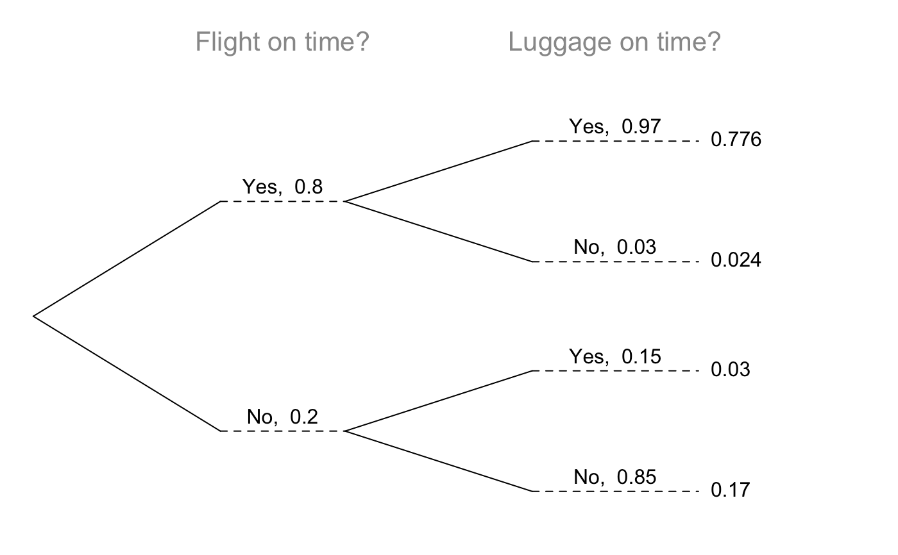
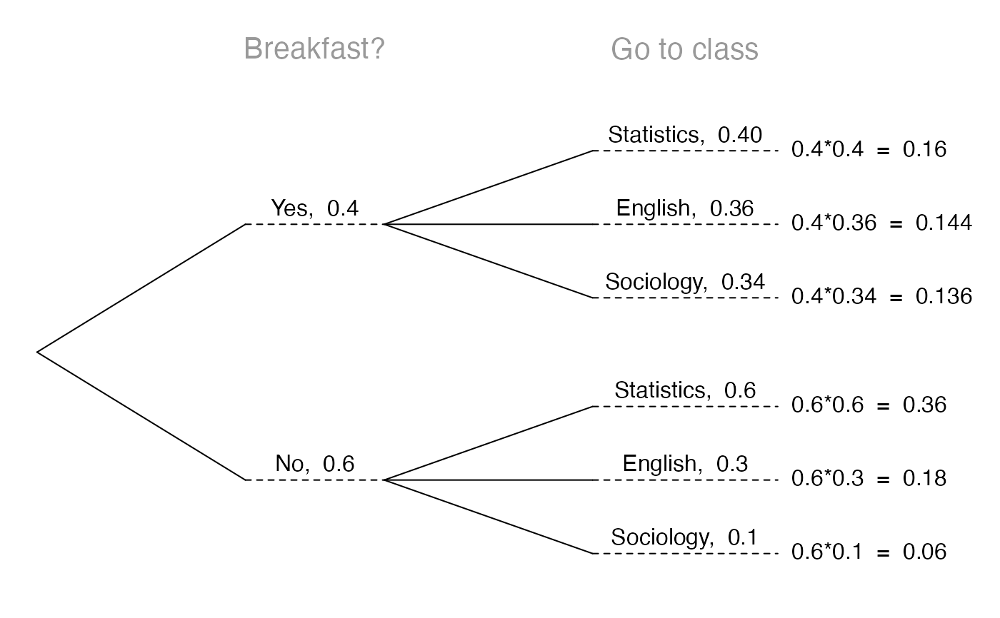
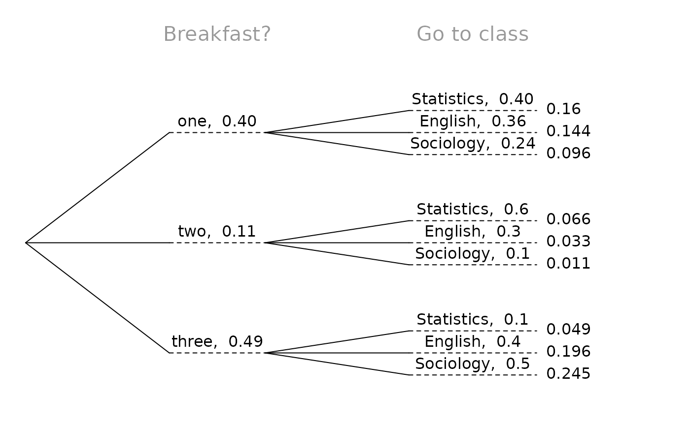
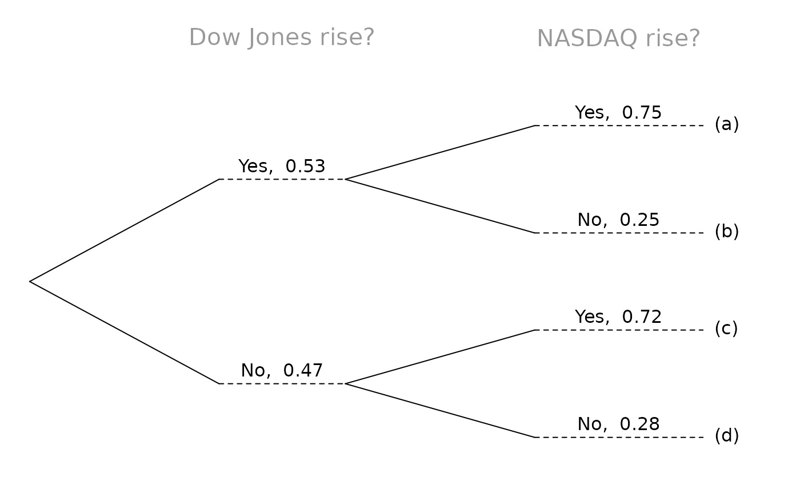

Construct beautiful tree diagrams
treeDiag( main, p1, p2, out1 = c("Yes", "No"), out2 = c("Yes", "No"), textwd = 0.15, solwd = 0.2, SBS = c(TRUE, TRUE), showSol = TRUE, solSub = NULL, digits = 4, textadj = 0.015, cex.main = 1.3, col.main = "#999999", showWork = FALSE )
| main | Character vector with two variable names, descriptions, or questions |
|---|---|
| p1 | Vector of probabilities for the primary branches |
| p2 | List for the secondary branches, where each list item should be a
numerical vector of probabilities corresponding to the primary branches of
|
| out1 | Character vector of the outcomes corresponding to the primary branches |
| out2 | Character vector of the outcomes corresponding to the secondary branches |
| textwd | The width provided for text with a default of |
| solwd | The with provided for the solution with a default of |
| SBS | A boolean vector indicating whether to place text and probability side-by-side for the primary and secondary branches |
| showSol | Boolean indicating whether to show the solution in the tree diagram |
| solSub | An optional list of vectors corresponding to |
| digits | The number of digits to show in the solution |
| textadj | Vertical adjustment of text |
| cex.main | Size of |
| col.main | Color of |
| showWork | Whether work should be shown for the solutions |
David Diez, Christopher Barr
treeDiag(c("Breakfast?","Go to class"), c(.4,.6), list(c(0.4,0.36,0.34), c(0.6,0.3,0.1)), c("Yes", "No"), c("Statistics","English","Sociology"), showWork = TRUE)treeDiag(c("Breakfast?","Go to class"), c(0.4, 0.11, 0.49), list(c(0.4, 0.36, 0.24), c(0.6, 0.3, 0.1), c(0.1, 0.4, 0.5)), c("one", "two", "three"), c("Statistics", "English", "Sociology"))treeDiag(c("Dow Jones rise?", "NASDAQ rise?"), c(0.53, 0.47), list(c(0.75, 0.25), c(0.72, 0.28)), solSub = list(c("(a)", "(b)"), c("(c)", "(d)")), solwd = 0.08)